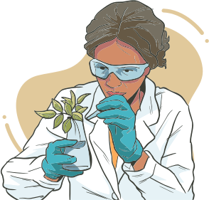

Com o objetivo de alertar sobre o consumo de espécies medicinais sem o conhecimento básico de suas ações e riscos, um estudo revela que muitas plantas medicinais e suplementos usados com frequência pela população têm, entre seus componentes, substâncias químicas que se ligam aos receptores do estrogênio nas células, podendo desencadear efeitos estrogênicos ou antiestrogênicos indesejados. Cabe, portanto, aos profissionais de saúde na Atenção Primária questionar a gestante logo na primeira consulta de pré-natal a respeito do uso de chás, ou de plantas medicinais sob outras formas farmacêuticas, e orientá-la a evitar o consumo, a não ser que seja instruída por profissional habilitado para prescrever plantas medicinais e fitoterápicos.
A partir de agora, apresentaremos alguns fitoterápicos que podem ser úteis no tratamento de doenças do sistema geniturinário feminino.
